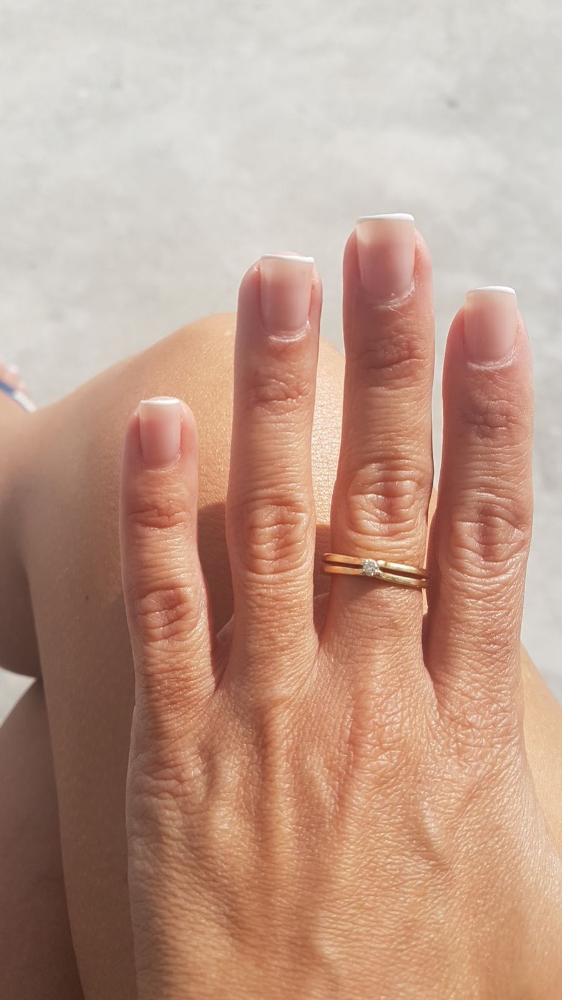
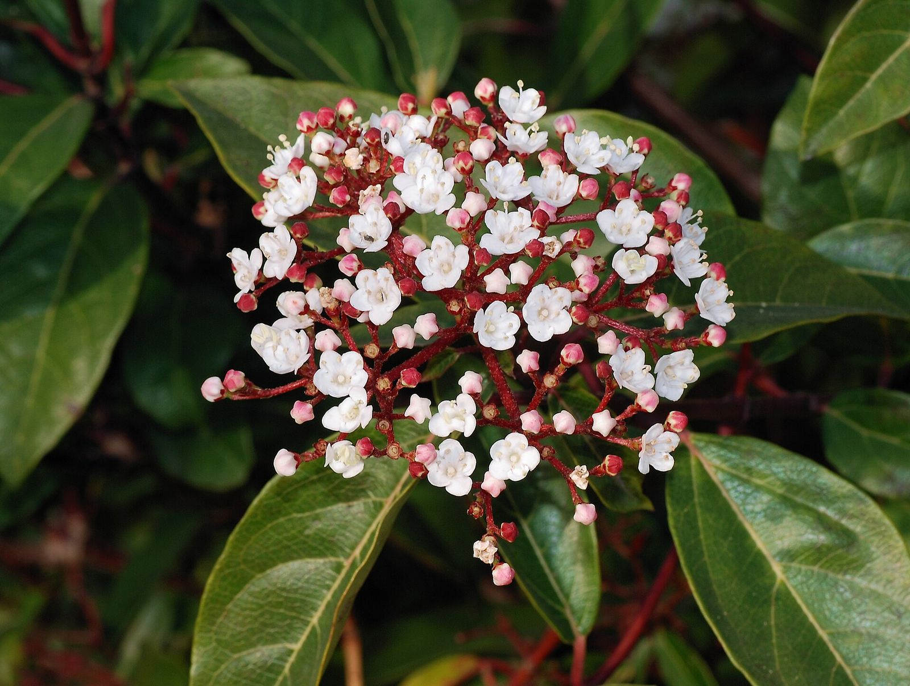
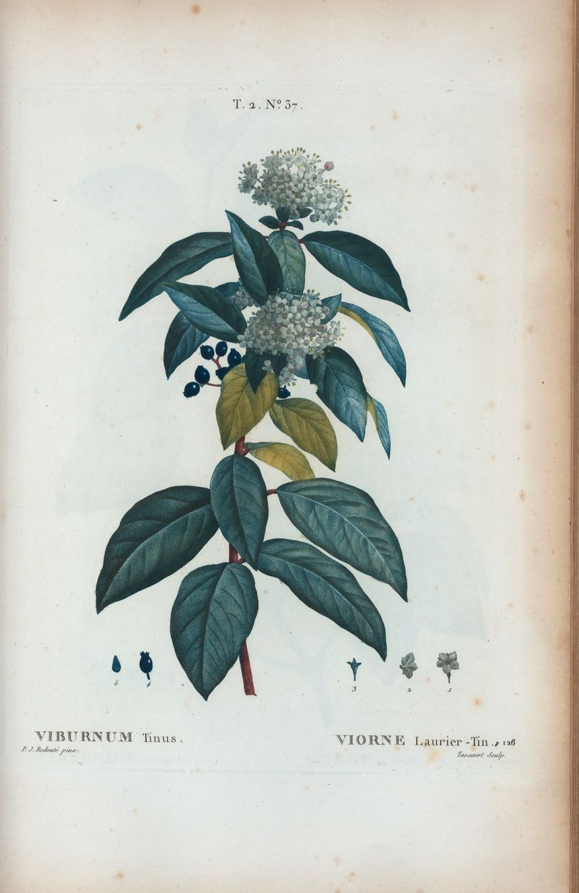
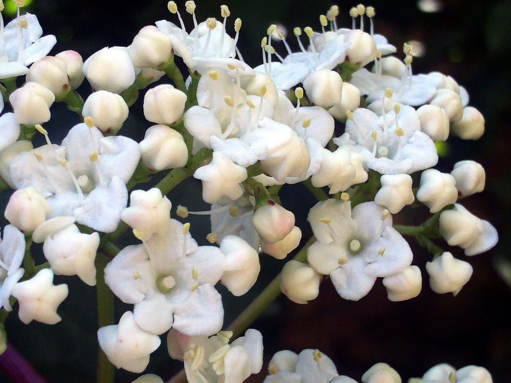
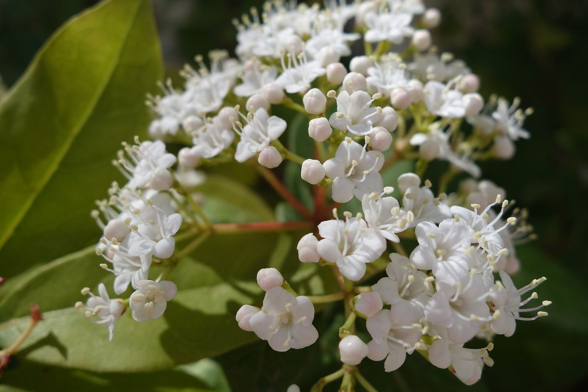
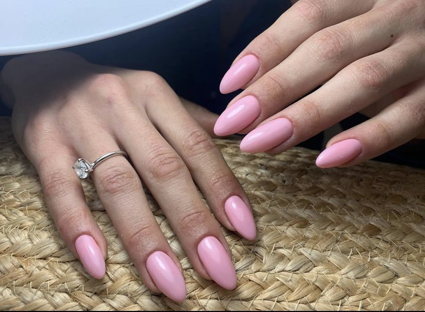

ג׳לGel
צבע ג׳ל וברקGel colour and shine
קונספט לדוגמה שנבנה עבור מורן לוי מכון יופי · זה אינו האתר הרשמי של העסקA sample concept built for Moran Levi Beauty · This is not the business’s official website
מורן לוי מכון יופי: מניקור, ג׳ל, פרנץ׳ ופדיקור, ברחוב ורדיה 8 בחיפה.Moran Levi Beauty: manicure, gel, French and pedicure, at 8 Vardia Street, Haifa.






מורן החורש גדל בכרמל: ניצנים ורודים שנפתחים לפרחים לבנים.Laurustinus, “moran” in Hebrew, grows on the Carmel: pink buds that open into white flowers.
ג׳ל בצורת שקד, מתוך התמונות של המכון.Almond-shaped gel, from the studio’s own photos.
ציפורניים בידיים וברגליים. על טיפולים נוספים אפשר לשאול בוואטסאפ.Nails, hands and feet. Ask on WhatsApp about other treatments.
צבע ג׳ל וברקGel colour and shine
טיפוח הציפורן והעורNail and cuticle care
קצה לבן ועדיןA fine white tip
טיפוח כפות הרגלייםCare for the feet
חמישה ימים בשבוע, מ-8:30 בבוקר. בשני ובשבת סגור.Five days a week, from 8:30 in the morning. Closed on Monday and Saturday.
“מקום אסטטי נוח מאוד עבודה יסודית ומקצועית”“A very aesthetic, comfortable place, thorough and professional work”
חמש ביקורות כתובות מגוגל, כלשונן.Five written Google reviews, translated from Hebrew.
“מקום מדהים עם יחס אישי ועשו לי ג׳ל מושלם ומקצועי מאוד ממליצה בחום אני מרמת השרון ובאתי במיוחד לשם”“An amazing place with personal attention, and they did a perfect, very professional gel for me. Warmly recommended. I’m from Ramat HaSharon and came especially.”
“צוות של אלופות, יחס מעולה, זמינות ומקצועיות. מומלץ בחום”“A team of champions, an excellent attitude, availability and professionalism. Warmly recommended.”
“לקוחה יחסית חדשה וסופר מרוצה! מכון מהמם! צוות מקצועי ואכפתי, המון סוגי טיפולים במקום אחד, זמינות גבוהה. ממליצה בחום!”“A fairly new client and super happy! A gorgeous studio! A professional, caring team, lots of kinds of treatments in one place, high availability. Warmly recommended!”
“מקום אסטטי נוח מאוד עבודה יסודית ומקצועית … הלנה הפדיקוריסטית אלופה נחמדה ומקצועית”“A very aesthetic, comfortable place, thorough and professional work … Helena the pedicurist is a champion, nice and professional.”
“אין חווית שירות כזאת”“There’s no service experience like it.”
בוחרים טיפול ויום, וההודעה למורן נכתבת מעצמה.Pick a treatment and a day, and the message to Moran writes itself.
ראשון, שלישי, רביעי וחמישי 8:30–19:00, שישי 8:30–13:55. בשני ובשבת סגור.Sunday, Tuesday, Wednesday and Thursday 8:30–19:00, Friday 8:30–13:55. Closed on Monday and Saturday.
בוואטסאפ או בטלפון, 052-885-6605.On WhatsApp or by phone, 052-885-6605.
מניקור, ג׳ל, פרנץ׳ ופדיקור. על טיפולים נוספים אפשר לשאול בוואטסאפ.Manicure, gel, French and pedicure. Ask on WhatsApp about other treatments.
ברחוב ורדיה 8 בחיפה. המפה כאן למטה.At 8 Vardia Street, Haifa. The map is just below.